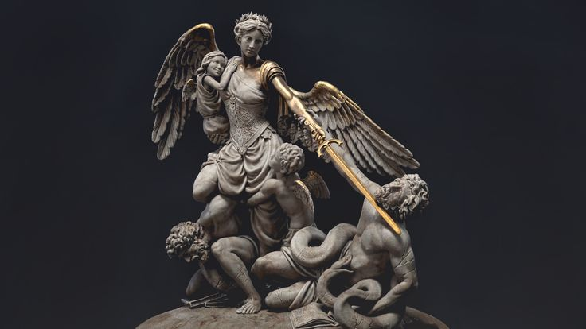

Escultura
La escultura es el arte de transformar materiales en formas que cuentan historias. Desde las estatuas de los faraones egipcios hasta las figuras abstractas modernas, siempre fue una manera de dejar una huella tangible en el mundo. Los primeros escultores tallaban piedra o madera con herramientas muy simples, pero lograban detalles impresionantes. Con el tiempo, se empezaron a usar metales, arcilla y hasta materiales reciclados o digitales. Un dato curioso: los escultores griegos buscaban la perfección del cuerpo humano y calculaban proporciones matemáticas para lograr figuras casi “divinas”. En cambio, Miguel Ángel creía que la escultura ya estaba “dentro” del bloque de mármol y que él solo debía liberarla, como hizo con su famoso David. Hoy, la escultura no se queda quieta: puede ser gigante, moverse con el viento o incluso proyectarse con luces en 3D.
